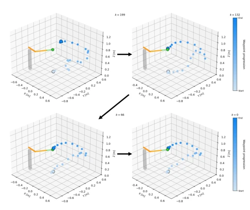
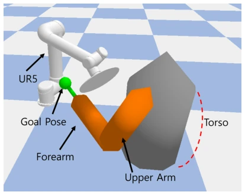

This paper cures the "slowness" of diffusion models in robot trajectory planning by using consistency distillation to cut inference time by 98%, from over 5 seconds to under 100 milliseconds, a speed that is indeed viable in HRI. However, the authors openly acknowledge the "simulation" aspect, not discussing static human configurations, perception uncertainty, or real-world dynamic interference at all. Training diffusion models with RRT-generated data is essentially "an experienced master guiding an apprentice"; while it ensures feasibility, it may fail to learn complex scenarios not covered by RRT. For non-redundant manipulators, using collision avoidance as a constraint to guide sampling is a clever approach, but relying entirely on offline-generated trajectory distributions raises questions about generalization when encountering obstacles unseen in the training set. Overall, it is a decent acceleration scheme, but there is still a considerable distance to true "human-robot symbiosis," and direct deployment in dynamic crowds should not be expected.
In human-robot interaction (HRI), manipulators must not only reach target poses but also avoid humans and obstacles. For non-redundant manipulators like UR5, once the end-effector pose is fixed, degrees of freedom are eliminated, and traditional null-space secondary task methods fail directly [3], [4]. Existing sampling planners (such as RRT) can handle constraints but have high computational costs and are unsuitable for high-frequency replanning [5], [6]; optimization methods often rely on preset paths or static environments and have poor dynamic adaptability [14], [15]. Although diffusion models can generate diverse trajectories [17], [20], iterative denoising leads to excessively long inference times, making it difficult to meet real-time requirements. Therefore, this study aims to solve how to achieve fast, smooth trajectory generation for non-redundant manipulators in HRI environments while ensuring safety constraints.
The overall process is divided into three stages: data construction, model training, and accelerated inference. First, a joint-space trajectory dataset satisfying collision avoidance and self-collision constraints is generated using RRT and RRT* algorithms to serve as supervised signals for the diffusion model. The core model adopts a conditional diffusion model; inputs include initial joint configurations, end-effector target poses (encoded as 9-dimensional vectors), and obstacle features (capsule representation), predicting noise via Temporal U-Net. To address the slow inference of diffusion models, Consistency Distillation is introduced, distilling multi-step iterations into few-step sampling, training a student network to directly predict clean trajectories. During the sampling process, gradient guidance based on differentiable constraint costs (Constraint-Guided Sampling) is added to correct the reverse propagation mean to avoid obstacles. Additionally, a joint-weighted jerk regularization term is added to the loss function, penalizing sudden changes in joint acceleration based on manipulability, Jacobian column norms, and time weights to ensure trajectory smoothness. Finally, the consistency model can generate high-quality trajectories with only a few sampling steps.

Fig. 3. Few-step consistency sampling process. Each panel shows the EE trajectory obtained by applying forward kinematics to the guided clean trajectory estimate ˆq0,𝜃in Algorithm 2 at the selected timesteps 𝑘= 199, 132, 66, 0.
Experiments were conducted in a UR5 simulation environment, using 51,000 RRT-generated trajectory data points, of which 500 were used for testing. Diffusion models and consistency models with/without jerk regularization were compared. Results show that diffusion model inference time was approximately 5.7 seconds, dropping to around 95 milliseconds after consistency distillation, achieving a 98% speedup. In terms of success rate, both remained above 98%, indicating that acceleration did not sacrifice feasibility. Jerk regularization significantly reduced joint and end-effector jerk (approximately 36%), improving smoothness. Ablation studies indicate that regularization remains effective in the consistency model, preventing smoothness degradation caused by distillation. However, testing was based solely on static human configurations, not involving dynamic perception errors.

Fig. 4. Simulation environment for human-aware trajectory generation. The UR5 manipulator reaches a goal pose near the human hand while avoiding collision primitives representing the torso, upper arm, and forearm. White denotes the UR5 manipulator, green denotes the goal pose, orange denotes the human arm, and gray denotes the torso.